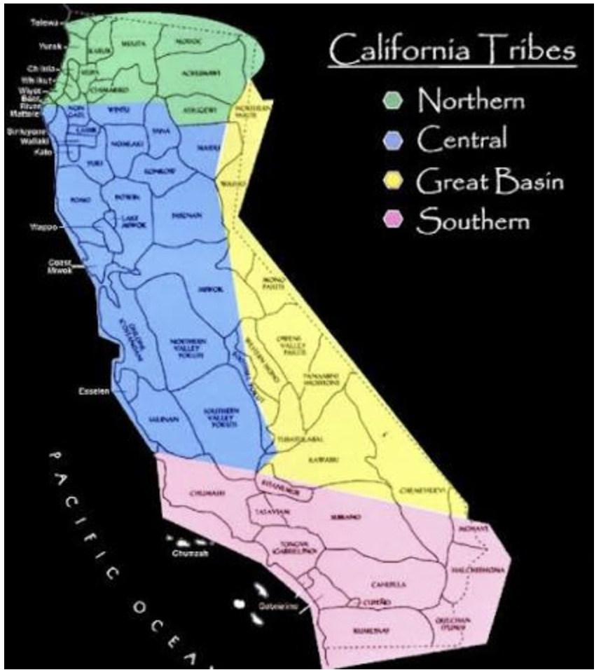
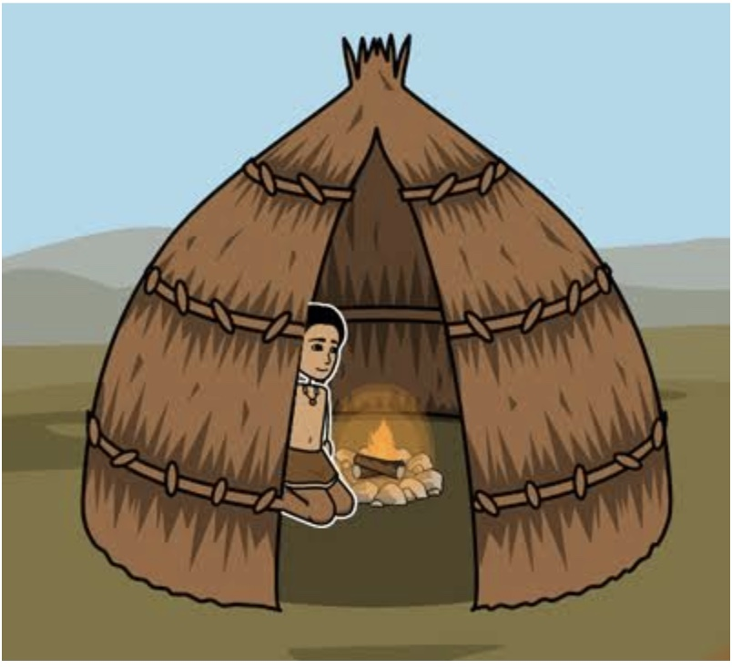
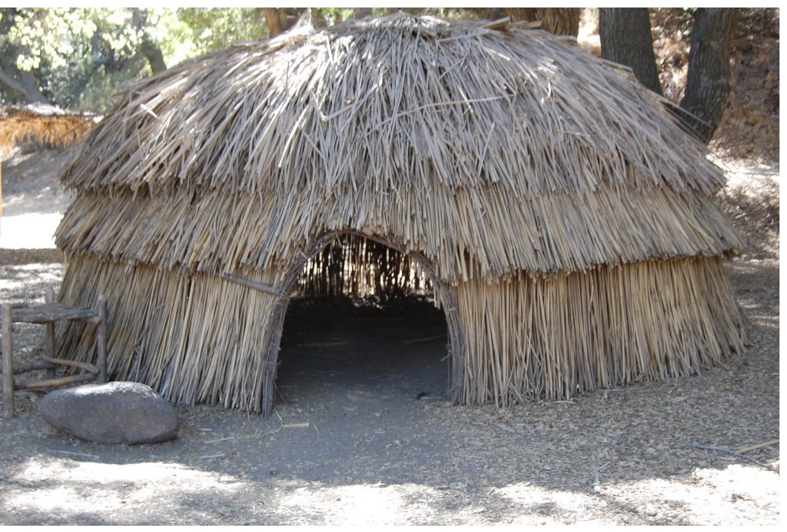
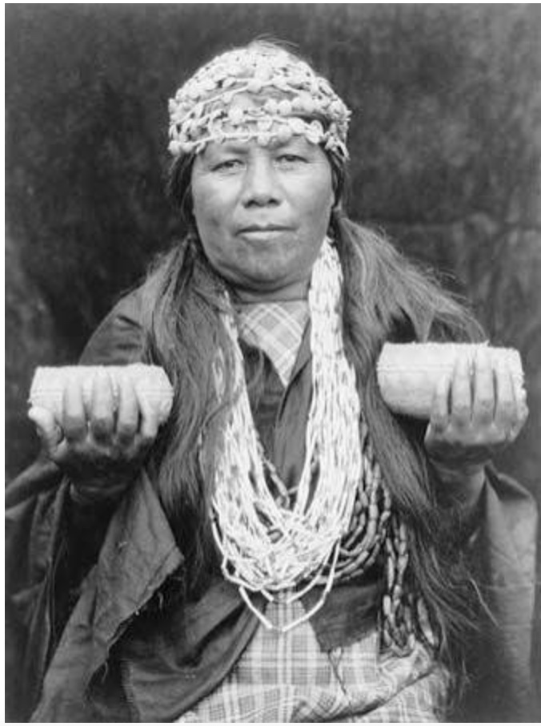
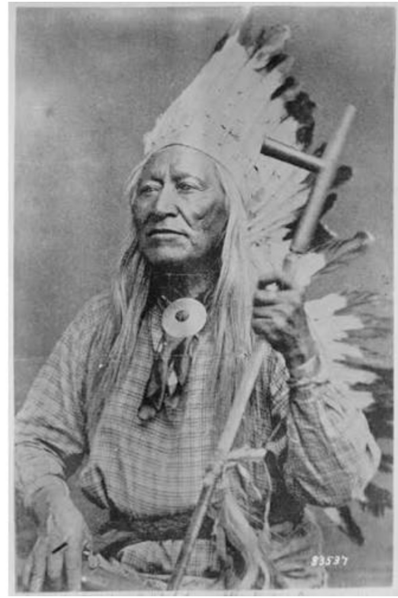
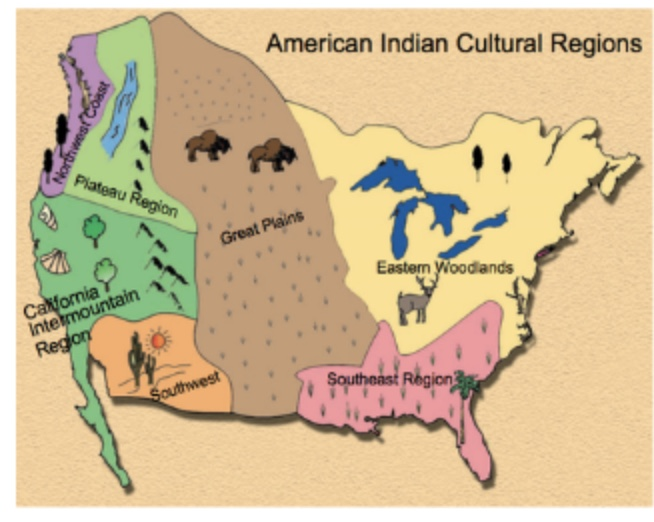
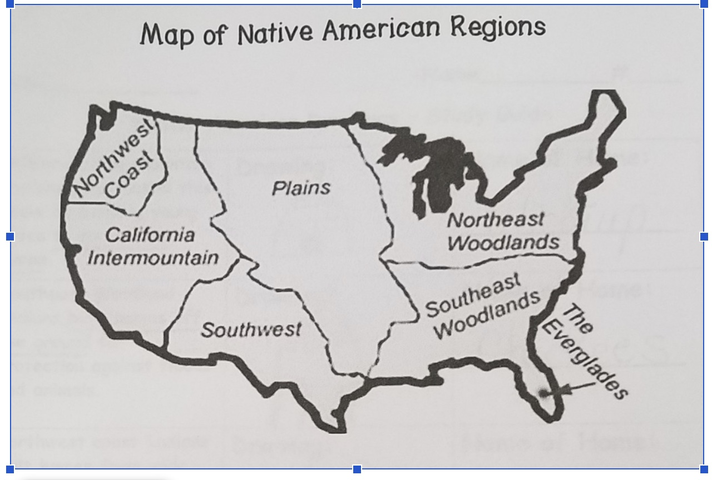
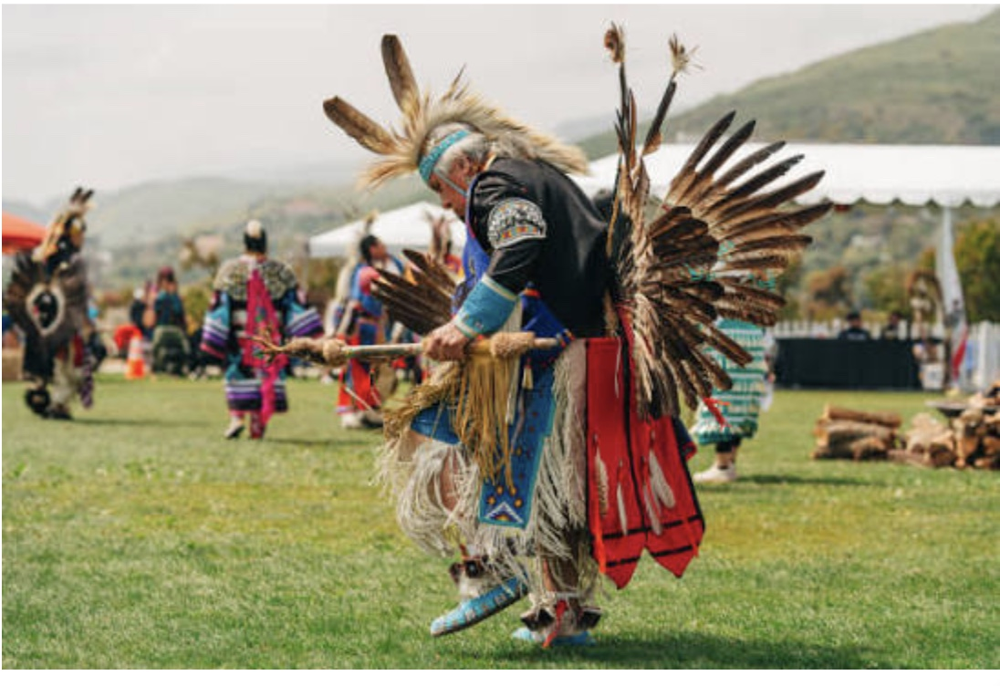

Tribes
The tribes in California Intermountain are the Shoshones, the Paiutes, the Miwoks, and the Pomos.
Shoshones
Paiutes
Miwoks
Pomos
They were called the Indigenous Californians or the Native Californians there in the California Intermountain region.

Climate
California has a mild climate but the Great Basin near California had a very hot climate with limited rainfall.
Cold
Temperatures swung down...
Hot
...and back up again, often.
California switched temperatures from cold to hot often, so that’s why it’s considered a mild climate.
Physical Features of California Intermountain
They hunted and fished.
Men
Hunted and fished.
Women
Collected plant foods and small game.
The physical features of California Intermountain were good water sources, landforms, and it looked very beautiful before.
Natural Resources
There were ample natural resources found in the region, such as some bones (normally dinosaurs).
Types of Homes in the Region
The homes were normally cone shaped or dome shaped. There were also Yurok plank houses in this region. The houses looked like this.


Clothing
California people wore little clothing. Women wore a skirt made of animal skin or plant fibers and because the weather was usually pretty mild, Indigenous people in the California-Intermountain region mostly wore light, simple clothes made from animal skins and local plants.


Tools
Native tribes in the California-Intermountain region, like the Miwok, Pomo, and Paiute, made their tools from natural materials such as stone, wood, bone, antler, and plant fibers. They hunted and fished with bows and arrows, spears, nets, and bone hooks, while using stone bowls, grinding rocks, digging sticks, and watertight baskets to gather and cook acorns and nuts. To make these tools and build homes, they also used sharp obsidian blades, bone needles, and antler wedges.
A Bridge Between Barriers
From Pacific ocean mist and towering coastal redwoods, across the granite spine of the Sierra Nevada, to the sagebrush flats of the Great Basin.
To understand the American West, you have to look at the land between the barriers. This is the California Intermountain region, a vast geographic and cultural bridge stretching from the mild shores of the Pacific Ocean, across the towering walls of the Cascade and Sierra Nevada ranges, and out into the high, arid expanse of the Great Basin.


Coast & Coastal Forests
Waves crash against rugged cliffs as mist rises off the cold ocean water. Dense coastal forests of towering redwoods stretch inland, fed by marine mist.


The Mountain Barrier & Rain Shadow
Jagged granite peaks, dusted with snow, rise along the Sierra Nevada crest, where sunlight glints off alpine lakes and rushing rivers carve deep valleys through the rock.
The green forests give way to the rain shadow, where flats of sagebrush, salt pans, and distant basin-and-range mountains shimmer under a wide, cloudless sky. Few places pack so many extremes into a single corridor. Within a few hundred miles, coastal forests give way to alpine tundra, and alpine tundra drops into some of the driest desert valleys in North America.

Abundance on the Western Slope
Sunlight filters through sprawling valley oaks as clusters of acorns hang heavy on the branches. For thousands of years, Indigenous nations have known and cared for this diverse landscape, including the Maidu along with the Pomo and Miwok.
People harvested salmon from coastal rivers, gathered shellfish along the tides, and turned the autumn acorn harvest into a year-round staple through careful leaching and stone-boiling. Basketry traditions used local plants and materials, with designs and practices particular to each community.
Resilience in the Great Basin
East of the Sierra crest, the land opens into high plateaus and broad basins. Indigenous nations including the Ute, Bannock, and Goshute, along with the Shoshone and Paiute, have long lived throughout this region, adapting their lifeways to its climates, waters, and seasons.
Families traveled to gather pine nuts in the high hills during autumn, hunt game across the sagebrush flats, and visit lakes and marshes as conditions changed. Knowledge of plants, animals, water, and seasonal cycles made it possible to thrive in a landscape where resources could be widely dispersed.

Carving Through Granite
For centuries, the Sierra Nevada's rugged mountain walls made travel between the coast and the interior difficult. To nineteenth-century travelers, crossing the range could mean freezing temperatures, dangerous passes, and impassable snow.
In the 1860s, engineers and thousands of laborers, many of them Chinese immigrants, built the Central Pacific Railroad across the Sierra Nevada. They blasted tunnels through granite and constructed snow-protection structures along exposed stretches of track.
When the Central Pacific and Union Pacific railroads met in Utah in 1869, the transcontinental connection transformed travel and commerce. The route linked distant communities and reshaped the movement of people and goods across the West.
Modern Infrastructure & Water
Today, roads, railways, reservoirs, and power lines cross a landscape still defined by mountain ranges and dry basins. Water is one of the region's most important resources: snowpack in the high country feeds rivers that supply farms, towns, and cities across California and neighboring states.
Dams, canals, and aqueducts have changed how water moves through the region, supporting communities while also affecting rivers, wetlands, wildlife, and Indigenous homelands. Drought, wildfire, and a changing climate make decisions about water and land increasingly consequential.
The California Intermountain region is not simply a passage between places. It is a living landscape, shaped by its communities, its seasonal rhythms, and the ongoing relationship between people and the natural world.

Extra Information
A culture area is a geographic region in which people share certain traits. California is one of the 10 culture areas that people use to study the Indigenous people of the US and Canada. There were a lot of dancers there.

Thank You!
Thanks for reading my California Intermountain presentation (and hopefully my websites!)